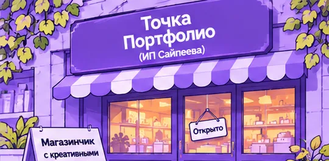

<!doctype html><html lang="ru"><meta charset="utf-8"><meta name="viewport" content="width=device-width,initial-scale=1"><title>Точка Портфолио (ИП Сайпеева)</title><style>*{box-sizing:border-box}body{margin:0;background:#eee2ff;color:#24133d;font:17px/1.5 system-ui,sans-serif}main{max-width:1120px;margin:auto;padding:24px}h1{font-size:clamp(30px,5vw,52px);line-height:1.06}button,a{font:inherit}button,.btn{background:#7136d2;color:white;border:0;border-radius:28px;padding:12px 23px;cursor:pointer;text-decoration:none;display:inline-block;font-weight:700}button:hover,.btn:hover{background:#5122a7}.scene{min-height:470px;background:linear-gradient(130deg,#dac1fa,#f6efff);border-radius:28px;padding:28px;display:grid;gap:22px;align-items:center;grid-template-columns:1fr 1fr}.art{width:100%;max-height:410px;object-fit:contain;border-radius:20px}.cover{width:100%;border-radius:24px;display:block}.dialog{position:relative;margin:28px 0 16px;background:#faf5ff;border:1.5px solid #905ce1;border-radius:22px;padding:28px 52px 20px 24px;box-shadow:0 5px 12px #6438a51a;min-height:100px}.speaker{position:absolute;top:-16px;left:22px;background:#7136d2;color:white;border-radius:24px;padding:5px 20px;font-weight:700}.next{position:absolute;right:18px;bottom:16px;color:#7136d2}.actions{display:flex;gap:12px;flex-wrap:wrap;justify-content:center}.shelf{display:grid;grid-template-columns:repeat(3,1fr);gap:16px}.item{background:#faf5ff;color:#281447;border:1px solid #d1b6f7;border-radius:20px;min-height:135px;text-align:left}.item:hover{background:#e4d2ff;color:#281447}.case{display:grid;grid-template-columns:1fr 1fr;gap:25px;background:#faf5ff;padding:25px;border-radius:24px}.case h3{color:#7136d2;margin-bottom:3px}.case p{margin-top:0}.media{width:100%;max-height:490px;object-fit:contain;background:#e6d7f7;border-radius:15px}iframe{width:100%;height:350px;border:0}.thumbs{display:flex;gap:8px;flex-wrap:wrap}.thumbs button{padding:7px 12px}.small{font-size:14px;color:#654d83}header{max-width:1120px;margin:auto;padding:16px 24px;font-weight:800;color:#5925b2}@media(max-width:700px){main{padding:14px}.scene,.case{grid-template-columns:1fr;min-height:0;padding:16px}.shelf{grid-template-columns:1fr 1fr}.art{max-height:240px}}</style><header>Точка Портфолио · ИП Сайпеева</header><main id="app"></main><script>const P=[{"title": "Шпионский квест", "type": "Реализованный", "object": "Шпионский чемодан", "category": "Фестивальная активация", "role": "Автор идеи, инициатор партнёрства", "task": "Привлечь внимание к товарам собственной торговой марки Самоката и создать повод для UGC.", "idea": "Лазерный лабиринт, который нужно пройти, чтобы добраться до продуктов Самоката.", "result": "8 600+ участников за три дня; более 30 упоминаний в соцсетях.", "line": "Один из самых любимых моих проектов! Во-первых, офлайн-квест, а во-вторых, участники возвращались по несколько раз, чтобы пройти его. Кто-то специально приехал на локацию, потому что увидел нашу активацию в сторис.", "media": ["assets/media-01.png"], "drive": ""}, {"title": "Искры добра", "type": "Реализованный", "object": "Бенгальские огни", "category": "Благотворительная акция", "role": "Креатор и креативный куратор проекта", "task": "Поддержать новогоднюю коммуникацию «Легко дарить радость» и благотворительность.", "idea": "За покупки в Самокате пользователи получали промокоды для персональных сборов в приложении «Помощь». Сделали интеграцию в приложение, ролик и мерч.", "result": "Закрыто 29 благотворительных сборов.", "line": "Проект был многосоставной: перед Новым годом запустили благотворительную акцию, сделали фичу в приложении партнёра, выпустили мерч, сняли ролик и провели фотосъёмку героев.", "media": ["assets/media-02.webp", "assets/media-03.webp", "assets/media-04.webp", "assets/media-05.mp4"], "drive": "1-UQH-H-RbXTviKNLcI1gClBPWxEFK3Gr"}, {"title": "А что, если в параллельной вселенной есть Самокат?", "type": "Реализованный", "object": "Курьерская сумка", "category": "Игровой спецпроект", "role": "Автор идеи, продюсер", "task": "Рассказать о собственной торговой марке через игру и сторителлинг.", "idea": "Лендинг с тремя мини-играми про курьера Максима, который попадает в параллельную вселенную и помогает Сумке Самокат. После игр пользователи получали промокоды.", "result": "ROI 349%; среднее время игры — 15 минут; доходимость — 73%.", "line": "Ещё один любимый проект. Здесь особое отношение к персонажам: впоследствии они стали героями целой мультивселенной Самоката до конца года.", "media": ["assets/media-07.webp", "assets/media-08.webp"], "drive": ""}, {"title": "В поисках лимонадов", "type": "Реализованный", "object": "Алюминиевая банка", "category": "AR-игра", "role": "Автор идеи, продюсер", "task": "Повысить узнаваемость напитков СТМ и стимулировать использование промокодов.", "idea": "AR-игра, в которой персонажей-лимонадов нужно искать дома и в городских локациях.", "result": "Охват превысил план на 86%; активация промокодов — в четыре раза выше плана.", "line": "Стояла задача подсветить сезонный продукт — напитки. Мы придумали механику по мотивам Pokémon GO, чтобы выманить людей на улицу и предложить им собрать коллекцию персонажей.", "media": ["assets/media-16.webp"], "drive": "1NtBsEpOHS_UPkZiHvJmtsnHXsL9fx9W3"}, {"title": "Planto — «Так вкусно… и так вкусно»", "type": "Реализованный", "object": "Упаковка растительного напитка Planto", "category": "Рекламная кампания", "role": "Команда креатива", "task": "Разработать рекламную кампанию к Пасхе для профессиональной и потребительской аудиторий.", "idea": "Масштабируемый лайн «Так вкусно… и так вкусно… и так тоже вкусно…» связывает разные ситуации: кофе, домашнюю готовку, десерты и спорт. Брендовый лайн — «Пост вкуснее с Planto». Документальная съёмка с живой камерой и искренними реакциями.", "result": "", "line": "Мы с командой придумали рекламную кампанию к Пасхе для двух разных аудиторий — профессиональной и потребительской.", "media": ["assets/media-09.webp", "assets/media-10.webp", "assets/media-11.webp", "assets/media-12.webp", "assets/media-13.webp", "assets/media-14.webp", "assets/media-15.mp4"], "drive": "1-YSihJWveqtll1l565GW6JQLbFisrqgL"}, {"title": "Дроп украшений", "type": "Реализованный", "object": "Шкатулка с шармами", "category": "Брендовая коллаборация", "role": "Автор идеи", "task": "Создать трендовый мерч и усилить восприятие Самоката как lifestyle-бренда.", "idea": "Вместе с брендом «Зяблик» создали браслет с шармами в виде круассана, мороженого и сыра.", "result": "Применения промокодов — в 3 раза выше плана; охват — в 2 раза выше плана.", "line": "Сама ношу эти украшения как талисманы!", "media": ["assets/media-06.webp"], "drive": ""}];const app=document.querySelector('#app');let seen=new Set(),i=0;const art=(n)=>``;const b=(t,f)=>`<button onclick="${f}">${t}</button>`;const tg='<a class="btn" href="https://t.me/saipei" target="_blank" rel="noopener">Написать Айсылу</a>';const dialog=t=>`<div class="dialog"><span class="speaker">Айсылу</span>${t}<span class="next">▼</span></div>`;const actions=(...a)=>`<div class="actions">${a.join('')}</div>`;function show(s){app.innerHTML=s;window.scrollTo(0,0)}function home(){show(`${dialog('Привет, команда Точка Банка! Меня зовут Айсылу, а это мой магазинчик с креативными проектами. Здесь можно всё посмотреть, потрогать и даже расспросить меня о подробностях. Ну что, проведу экскурсию?')}${actions(b('Зайти в магазинчик','menu()'))}`)}function menu(){show(`<div class="scene">${art('hello')}<div><h1>Точка Портфолио</h1>${actions(b('Об ИП','about()'),b('Витрина с проектами','shop()'))}</div></div>${dialog('С чего начнём?')}`)}function about(){show(`<div class="scene">${art('portrait')}<div><h1>Об ИП</h1><h2>Айсылу Сайпеева</h2><p>Креатор и креативный продюсер</p><h3>Опыт работы</h3><p>04.2026 — н. в. · Золотые тигры, креатор<br>02.2025 — н. в. · Независимые креативные проекты<br>10.2024 — 01.2025 · Самокат, куратор креативных продюсеров<br>07.2022 — 09.2024 · Самокат, старший креативный продюсер<br>12.2021 — 06.2022 · Самокат, младший креативный продюсер<br>02.2020 — 04.2021 · Добрая Казань, проектный менеджер</p><h3>Образование</h3><p>КФУ — Государственное и муниципальное управление<br>SOBA — Суперстратег, 2026<br>MADS — Концептуальное мышление, 2025; Weekend креативности, 2023<br>ИКРА — сторителлинг, 2018</p></div></div>${dialog('Здесь собрала короткую справку о себе и своём профессиональном пути. А если захочется узнать обо мне чуть больше, всегда можно написать мне напрямую!')}${actions(b('Посмотреть витрину','shop()'),tg)}`)}function shop(){show(`<h1>Витрина с проектами</h1><div class="shelf">${P.map((p,j)=>`<button class="item" onclick="openCase(${j})">${seen.has(j)?'✓ ':''}0${j+1}<br>${p.title}</button>`).join('')}</div><p class="small">Просмотрено ${seen.size} из 6</p>${dialog('Вот моя витрина — шесть проектов. Какой разглянем первым?')}${actions(b('Об ИП','about()'),seen.size===6?b('Завершить экскурсию','end()'):'')}`)}function openCase(j){i=j;let p=P[j];seen.add(j);show(`${b('← К витрине','shop()')}<h1>${p.title}</h1><div class="case"><div><h3>Задача</h3><p>${p.task}</p><h3>Решение</h3><p>${p.idea}</p><h3>Моя роль</h3><p>${p.role}</p>${p.result?'<h3>Эффект</h3><p>'+p.result+'</p>':''}</div><div id="gallery"><div id="media"></div><div class="thumbs">${p.media.map((m,k)=>b(m.endsWith('.mp4')?'Видео':'Фото '+(k+1),`pick(${k})`)).join('')}</div>${p.drive?`<h3>Видео проекта</h3><iframe src="https://drive.google.com/file/d/${p.drive}/preview" allowfullscreen loading="lazy"></iframe><a href="https://drive.google.com/file/d/${p.drive}/view" target="_blank" rel="noopener">Открыть оригинал</a>`:''}</div></div>${dialog(p.line)}${actions(b('К витрине',seen.size===6?'end()':'shop()'),b(seen.size===6?'Завершить экскурсию':'Следующий проект',seen.size===6?'end()':`openCase(${(j+1)%6})`))}`);pick(0)}function pick(k){let m=P[i].media[k];document.querySelector('#media').innerHTML=m.endsWith('.mp4')?`<video class="media" controls playsinline src="${m}"></video>`:``}function end(){show(`${dialog('Вот и закончилась экскурсия по магазину. А если хотите, чтобы на витрине появился ещё один, уже совместный проект, напишите мне сообщение. А пока прощаюсь с вами! До встречи!')}${actions(tg,b('Вернуться к витрине','shop()'))}`)}home();</script></html>